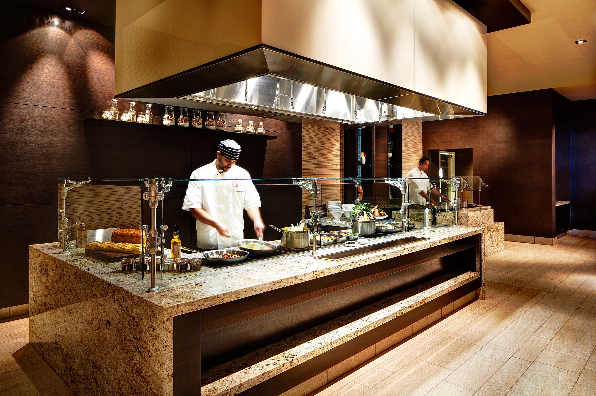

Ресторан Аврора
Одно из лучших заведений в Москве - ресторан "Аврора" на Зеленой. Здесь царит прекрасная атмосфера, идеально подходящая для веселых встреч с друзьями, теплых семейных обедов и ужинов, а также для романтического свидания со своей второй половинкой.
Интерьер. Внутри ресторана "Мечта" все очень правильно организовано. Именно поэтому в его залах могут единовременно разместиться 500 человек. В залах ресторана стоит мягкая мебель, а полы устланы коврами. В главном зале ресторана установлен небольшой функциональный камин, который не только является местным декором, но и согревает посетителей заведения в холодное время года, создавая атмосферу домашнего уюта. В этом же зале расположен открытый гриль, на котором готовят некоторые блюда из меню.
Одно из лучших заведений в Москве - ресторан "Аврора" на Зеленой. Здесь царит прекрасная атмосфера, идеально подходящая для веселых встреч с друзьями, теплых семейных обедов и ужинов, а также для романтического свидания со своей второй половинкой.
Интерьер. Внутри ресторана "Мечта" все очень правильно организовано. Именно поэтому в его залах могут единовременно разместиться 500 человек. В залах ресторана стоит мягкая мебель, а полы устланы коврами. В главном зале ресторана установлен небольшой функциональный камин, который не только является местным декором, но и согревает посетителей заведения в холодное время года, создавая атмосферу домашнего уюта. В этом же зале расположен открытый гриль, на котором готовят некоторые блюда из меню.
